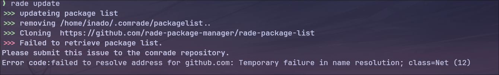

rade update
rade update updates the package list for comrade.
The comrade package list is located in ~/.comrade/packagelist/.
When you execute update, comrade first deletes the packagelist and then clones the comrade package list. This ensures that the packagelist is completely up to date.
If ~/.comrade/packagelist/ is not found, it simply clones the packagelist and updates it to the latest version.
If the packagelist update fails
If comrade fails to clone the packagelist, it will output an error message and stop operation.  (This error message occurred due to lack of internet connection.)
Package contents
The contents of a package are as follows:
❯ tree hello_knife/
hello_knife/
├── capacity
├── dependencies
├── language
├── repository
└── version
1 directory, 5 files
(We used the hello_knife package as an example)
Let's look at each of these:
-
capacity This file indicates the capacity of the package. comrade checks this file during installation to display the capacity.
-
dependencies This file shows the package dependencies. During installation, it checks this file to confirm dependencies. (However, the current version of comrade doesn't have dependency resolution functionality...)
-
language This file contains the programming language used by the package. In the case of hello_knife, since it uses C language, the content of this file is
C. -
repository This file contains the repository URL of the package. During installation, comrade checks this file and clones the target repository.
-
version This file contains the version of the package. comrade checks and outputs this file during installation.
If you want to create a new package
There's an executable shell script called create_package.bash in rade-package-list. By executing this shell script, you can easily add a package.
Example (if the package to be added is "test-package"):
./create_package.bash test-package None rust https://github.com/test-package/rade-test-package 100 v1.0
Let's look at what each of these means:
-
test-package This is the package name. A package (directory) with this name will be generated.
-
None This represents dependencies. If there are no dependencies, you can use None or leave it blank.
-
rust This is the programming language used in this package. In this case, we assume test-package uses Rust, so 'rust' is written here. (Please use lowercase for language names)
-
https://github.com/test-package/rade-test-package This is the repository URL. This repository will be cloned and installed.
-
100 This is the capacity used by the package program. We set it to 100 in this case. (Note that comrade's capacity notation is in bytes. So inputting 100 means the program is 100 bytes)
-
v1.0 This is the program version. This version will be output during installation. In this case, we set it as version 1.0.
This concludes this chapter. The next chapter will explain rade upgrade.